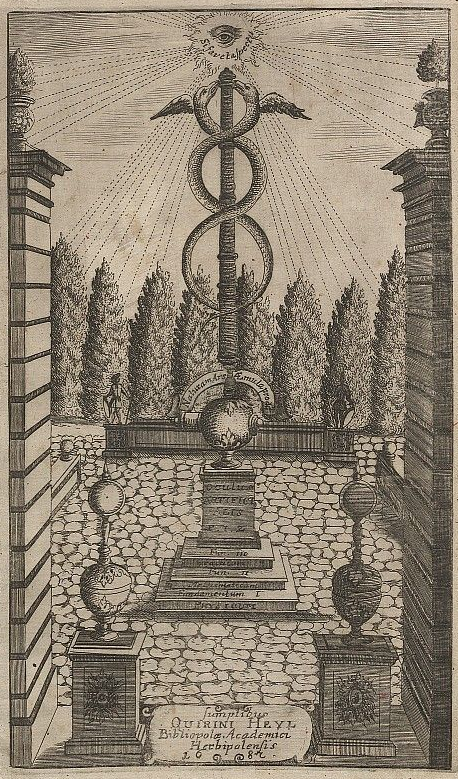

Os Mistérios Rosa-Cruz
Prefácio
Os Mistérios Rosa-Cruz são uma tradição esotérica que combina elementos de espiritualidade, misticismo e filosofia oculta, com raízes que remontam à Idade Média e à Antiguidade. Eles são frequentemente associados à Ordem Rosa-Cruz, uma organização secreta que reivindica a preservação de conhecimentos antigos e mistérios esotéricos.
História e Origens
A Ordem Rosa-Cruz, surgiu na Europa no início do século XVII, com o surgimento de textos esotéricos que proclamavam a existência de uma fraternidade secreta dedicada ao desenvolvimento espiritual e ao estudo de conhecimentos ocultos. Um dos primeiros documentos conhecidos é o Fama Fraternitatis (1614), que apresentou a Ordem ao público e delineou seus princípios. Seguiram-se outros textos importantes, como Confessio Fraternitatis (1615) e Chymische Hochzeit Christiani Rosenkreutz (1616), que ajudaram a moldar a visão pública da Ordem.
Os Mistérios Rosa-Cruz são geralmente considerados uma tradição que busca integrar e harmonizar ensinamentos esotéricos e filosóficos de várias culturas e épocas. Embora a Ordem Rosa-Cruz moderna tenha várias ramificações e interpretações, muitos dos princípios fundamentais são consistentes.
Princípios e Ensinamentos
• Transmutação Espiritual: Os ensinamentos Rosa-Cruz frequentemente giram em torno da ideia de transmutação espiritual e autodesenvolvimento. Os adeptos acreditam que a transformação interior é essencial para alcançar um estado de iluminação e compreensão superior.
• Harmonia e Unidade: Um princípio central dos Mistérios Rosa-Cruz é a busca pela harmonia e unidade com o universo. Os ensinamentos enfatizam a interconexão de todas as coisas e a necessidade de viver de acordo com princípios universais e naturais.
Símbolos e Alegorias
A tradição Rosa-Cruz é rica em simbolismo. Os símbolos são usados para transmitir ensinamentos profundos e esotéricos de uma forma que pode ser compreendida em múltiplos níveis. Os símbolos comuns incluem:
• A Rosa e a Cruz: O símbolo mais reconhecido é a rosa cruzada, que representa a fusão dos aspectos material e espiritual da existência. A rosa simboliza a perfeição espiritual e a cruz representa a manifestação do divino na vida material.
• A Serpente e o Caduceu: A serpente é um símbolo de sabedoria e regeneração. O caduceu, um bastão com duas serpentes entrelaçadas, é um símbolo de equilíbrio e cura, representando a união dos princípios opostos.
• O Sol e a Lua: Representam a dualidade e a integração dos aspectos masculino e feminino, consciente e inconsciente. O Sol simboliza a luz e a verdade, enquanto a Lua representa a sabedoria oculta e a intuição.
• O Compasso e o Esquadro: Associados à geometria sagrada e ao equilíbrio moral, esses símbolos são frequentemente usados para representar a ordem e a precisão no desenvolvimento espiritual e ético.
Alquimia Espiritual
Os Rosa-Cruz frequentemente incorporam conceitos de alquimia, não apenas como prática material, mas como metáfora para a transformação espiritual e interior. A alquimia espiritual visa transformar o "chumbo" da natureza humana em "ouro" espiritual através do desenvolvimento pessoal e da iluminação.
Esoterismo e Misticismo
Os ensinamentos Rosa-Cruz exploram o esoterismo, que é o estudo de conhecimentos ocultos e profundos, e o misticismo, que busca a experiência direta do divino e da verdade suprema. Esses elementos são estudados através de práticas, meditações e rituais que visam a compreensão mais profunda do universo e do eu.
Influências e Legado
Os Mistérios Rosa-Cruz influenciaram diversas correntes esotéricas e filosóficas, incluindo a maçonaria, o teosofismo e o ocultismo moderno. A tradição também exerceu uma influência significativa sobre movimentos culturais e intelectuais, promovendo uma visão do mundo que busca reconciliar a ciência, a religião e a filosofia através da prática espiritual e da busca pela verdade.
Serpentes pretas e brancas do Clavis inferni (1751), manual de Höllenzwang que se apropria de motivos da magia rosacruz Metatrona.A Ordem Rosa-Cruz, em suas diversas formas, continua a existir e a promover o estudo e a prática dos Mistérios Rosa-Cruz, oferecendo um caminho para aqueles que buscam um entendimento mais profundo da espiritualidade e da existência.